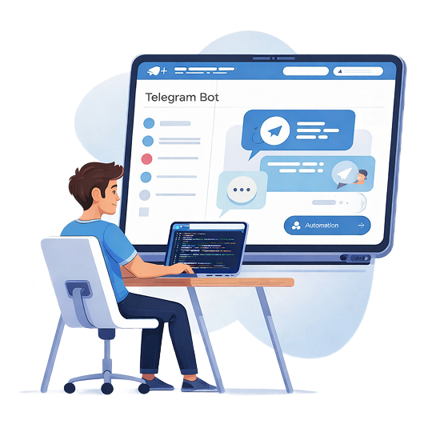

Telegram-разработка
Telegram-разработка
Разработка Telegram-ботов
для бизнеса
Создаю Telegram-ботов и лендинги для автоматизации заявок, продаж и общения с клиентами.
✅ Запуск за 5–10 дней
✅ Гарантия результата
✅ Поддержка 24/7
